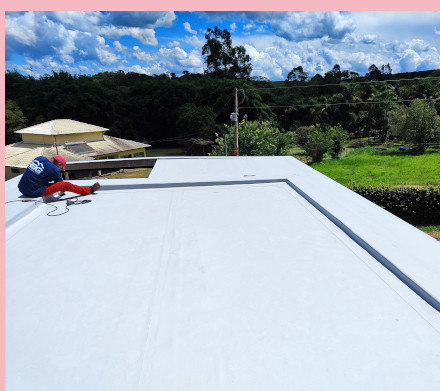
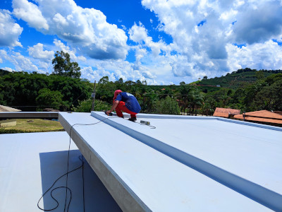
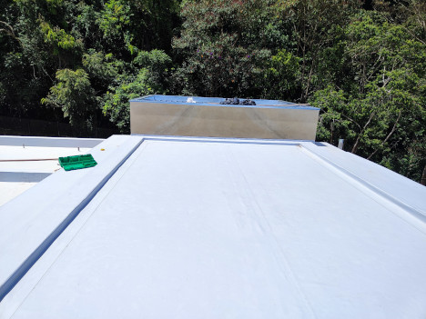
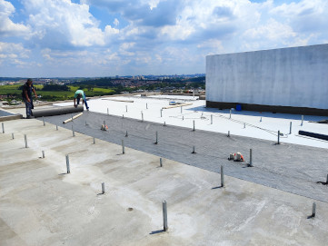

RBG TECNOLOGIA EM IMPERMEABILIZAÇÕES
contato: Lucas Reimberg
+55 11 97702-4529
Na prática, o que é uma mata de PVC?
Tecnicamente, as mantas de PVC são conhecidas como policloreto de vinila, uma das “infinitas” variações do plástico que existem. Sua aplicação também é muito variável, mas normalmente é utilizada em projetos de médio e grande porte, que requerem um revestimento impermeabilizável de algum ambiente ou equipamento. Como bem já resumimos na introdução, a manta de PVC surgiu como uma alternativa às mantas asfálticas, por uma variedade de motivos, dos quais abordaremos com mais detalhes ao longo desse texto. Uma das dúvidas e curiosidades que se têm sobre o produto também é sobre a segurança e o impacto ambiental desse material, já que há algum tempo, alguns ecologistas consideravam parte da composição maléfica a saúde e ao meio ambiente. Porém, isso não é mais uma verdade, tendo em vista que as empresas passaram a desenvolver soluções químicas para construção e retiraram qualquer agente problemático de suas produções.
POR QUE A MANTA DE PVC É A MELHOR OPÇÃO PARA IMPERMEABILIZAÇÃO DE EDIFÍCIOS?
Exposição direta e frequente à água da chuva, forte incidência solar e maiores riscos de manifestações patológicas como infiltrações e fissuras tornam a impermeabilização de coberturas uma das etapas mais importantes da construção de um edifício. Mas por que escolher uma manta de PVC?

Apostar em um sistema de impermeabilização eficiente, com performance e durabilidade elevada, além de excelentes características de alongamento, resistência à tração e rasgamento é essencial para garantir a proteção de uma área tão exposta quanto a cobertura.
Esse cuidado está diretamente relacionado ao sucesso e segurança do projeto, garantindo maior durabilidade à estrutura. Além, é claro, da redução de gastos com manutenção ou reparo causados pela quebra de revestimentos e interdições de áreas comuns.
No pós-obra, a recuperação de uma impermeabilização convencional pode ser cinco vezes mais cara que a aplicação. Ou seja, do ponto de vista financeiro, o produto acaba evitando gastos desnecessários. Não escolher uma solução de boa performance como a manta de PVC ou não executar sua aplicação de forma correta pode acarretar em vários problemas no edifício. A curto prazo, infiltrações pontuais, danificando e manchando pinturas, revestimento e mobiliária. A longo prazo, desplacamentos em fachadas, descolamento de piscinas e estruturas de concreto e corrosão de armaduras, o que pode comprometer a estrutura e sua estabilidade. “Sem a necessidade de camadas extras, a manta de PVC tem vida útil de duas a três vezes maior que as opções tradicionais disponíveis no mercado.”
